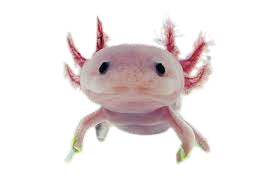

Axolotl
The axolotl is an amazing aquatic amphibian that lives in the lakes and canals of Mexico. What makes it special? Unlike most amphibians, axolotls retain their egg stage throughout their lives without undergoing metamorphosis into adults.
One of the most amazing features of the axolotl is its ability to regenerate. If an axolotl is cut off a limb, tail, or even part of the heart, it is able to completely restore the lost parts. This unique ability makes the axolotl the subject of many studies in the field of regenerative medicine.
Axolotls are also known for their external features. They have small eyes, a smiling mouth, and elongated, scaly gills on the sides of their heads. Moreover, they have the ability to breathe through their skin and gills, allowing them to exist in the aquatic environment.
Unfortunately, the axolotl is endangered in the wild due to loss of natural habitats and water pollution. However, axolotls are also popular aquarium animals and receive protection and attention through conservation and captive breeding efforts.